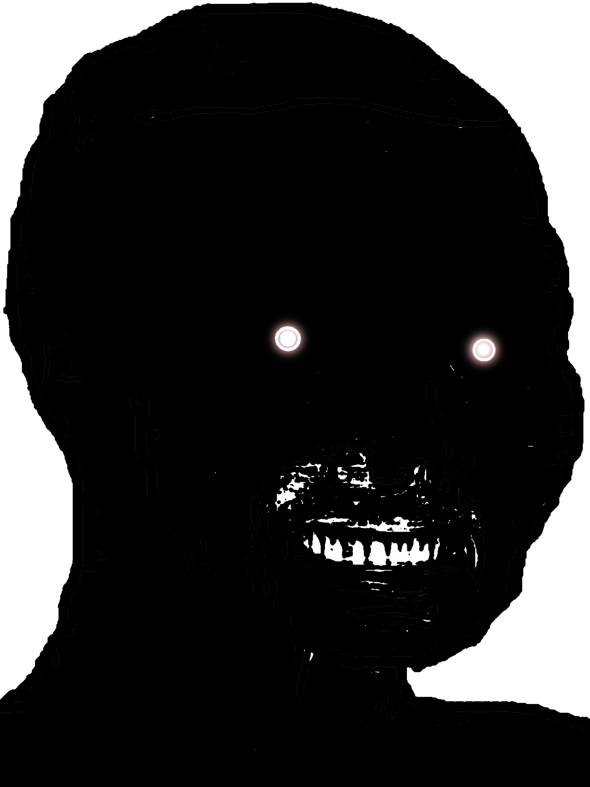

23 / 05 / 2019 - a thursday night, after hospital, after i set fire to the fuse
unfair, but what can you do
oh
but i was born in unhappiness
its all cliche really
it happens to a lot but fuck others at this point i only care about myself if even that, im trying as hard as i can but its shitty and difficult
it starts with a bad combo of genes and taboo topics, ignorance, pride, lack of education,,,,,,,,,,,god
my mother was abused born out of the desire of her mother to keep her husband in check. on a leash. of course she grew up manipulated, used(?), thrown away. its a lot. ive been exposed to all sorts of mental illnesses. i remember my mother being sad, angsty, straight up angry. what the fuck did i know what depression was. nobody fucking told me and i was left there to rot losing my mind trying to think of what i did to make her that way. a kid. not me, oh i never got to be one. her. but well come back to that. i had to be the adult. we had everything, and while they did try to shield me from them, we still had them all. from simple autism, anxiety or depression to fucking straight up psychosis, mania, bipolarity, ptsd, depersonalisation, alzheimers.
i am not special, we all have our shit to deal with.
i am not special
i am not special
i am not special
i am not special
i am not special
i am not special
i am not special
i am not special
i am not special
i am not special
i am not special
i am not special
god i wish we werent special
the fucks a kid supposed to do when hes forced to assume the adult. the fucks a kid supposed to do when his mother decided shes gonna be the kid she wants because fuck everyone with cherry on my dad whos fucking paying for everything. the fucks a kid supposed to feel or think when every single fucking passion/interest/sentence/fucking word is drifted forcefully into his mothers way to fit her best. to be what she never was???? fuck do i know and i do NOT want to know
oh the time i spent feeling SORRY for her. EVEN NOW EVEN FUCKING NOW BECAUSE IM WEAK I WAS TRAINED TO BE THIS
its what i was born to do, is it not?
my dad, god bless his soul his patience
his blood gave me what i needed to survive, to be smart, to sit on top. her blood gave me the way to get there. i can manipulate. i pay attention. i am paranoid. but i control that and im aware. something he couldnt do. on the other side, it also weakened me, and dissolved his side, making it impure. or maybe it really was the best mix, but manipulated the wrong way at such a young age. i still have to overcome my weaknesses. she planted this weakness in me.
even as i type these words, i feel bad. i feel guilty. was it really that bad? am i just overreacting?
she trained me well
there is so much i have to say, so much i want to say and get off my chest. this is going to be big. a project spanning multiple weeks, maybe even months. good night
there is no moment in my childhood. no moment in the last petty 18 years of my shitty life. no single moment of happiness i can recall. i have nothing to return to. i was forced to mature way faster than normal. the world happened to me too fast, too violent and brutal.
no, i wont cry for a childhood never had. i wont cry for the cards ive been dealt. but i will laugh for the literally what in the fuck i just wanted to be a kid and have friends normal friends?????